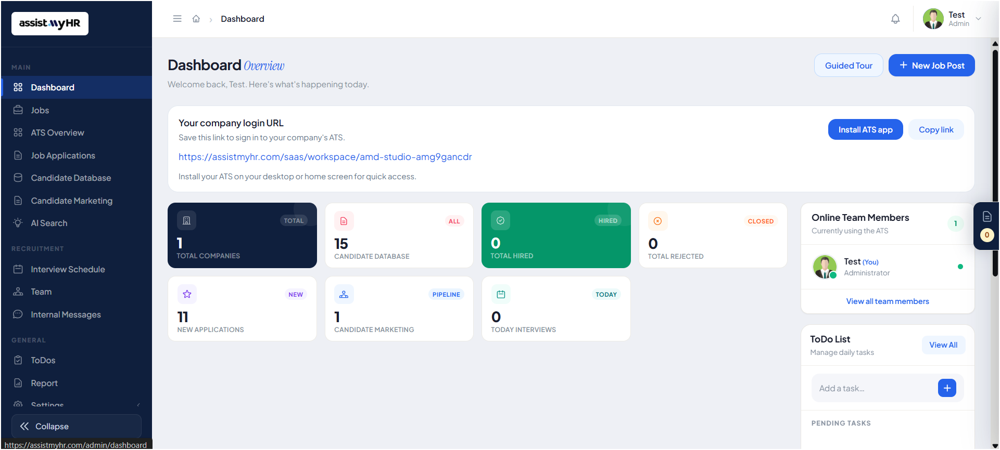
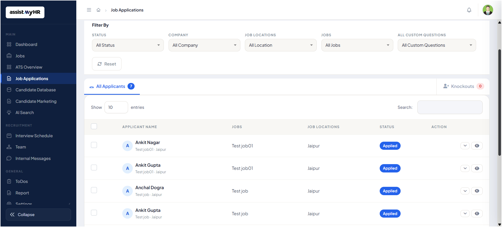
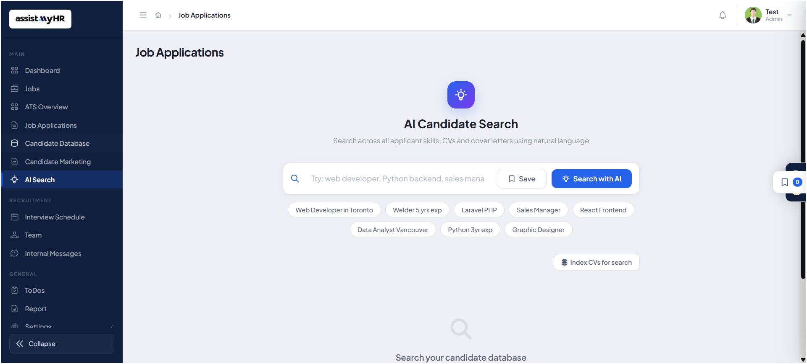
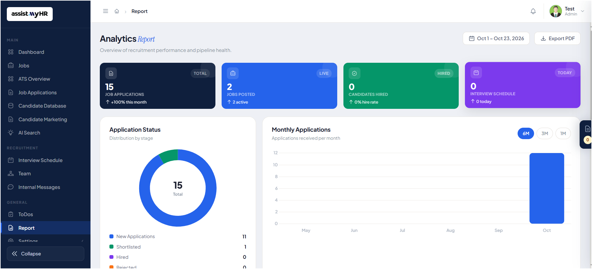

MAKE ROOM FOR POSSIBILITY
Start with a great
job opening.
Bring the role, requirements and hiring team together before the first application arrives.
Bring your jobs, candidates and team together. Spend less time on the process, and more time on the people who make your business.

From that first application to the next great hire. Bring your jobs, candidates and team into a simpler, more thoughtful hiring process.
Give every opportunity a place and every candidate a clear path. Keep your open roles and applications together, so your team can focus on the people behind them.
Explore the hiring journey
Describe the candidate you need in plain language. Search applicant skills, CVs and cover letters, save useful searches and index CVs for your talent pool.
Explore AI candidate search
Track applications, jobs posted, candidates hired and scheduled interviews. Review application stages and monthly trends, select a reporting period and export your report as a PDF.
See reporting in a demo
Bring the role, requirements and hiring team together before the first application arrives.
Keep interview schedules in view and help your team prepare for the people they’re meeting.
Make space for a better hiring conversation with a shared view of applications and activity.
Product screenshots supplied for this preview. Other product examples are illustrative.
One ATS for job openings, candidate management, team conversations and client feedback. Keep the journey connected, from the first application to the next placement.
A shared dashboard brings current activity into focus as soon as your team signs in.
Manage openings, build your talent pool, coordinate your recruiters and stay close to every application.
Create, update and track job openings across companies from a single list.
See current jobs, recruitment stages and hiring progress together in a live overview.
Review incoming applications in one inbox, with the information you need to move each candidate forward.
Search candidate profiles and keep their notes, attached files and recruitment history together.
Organize marketing pipelines for bench candidates and support their next placement.
Search CVs in everyday language to find candidates by skills, experience or the role you need to fill.
Book interviews, check the day’s calls and coordinate appointments without overlapping schedules.
Manage recruiters and administrators, with visibility into which teammates are currently online.
Keep team conversations inside the ATS, alongside the recruitment work you are doing.
Manage temporary placements and assignments through their full lifecycle.
Share candidate profiles with hiring clients and keep their feedback connected to the application.
Organize daily tasks and follow-ups so the next action stays visible.
Keep calls, emails, texts and client reviews close to the application, so the next conversation starts with the right context.
Call candidates within the ATS. Keep their call history and, where available, call summaries attached to the relevant application.
Send candidate emails and view synchronized replies in the application’s email conversation, keeping follow-ups in context.
Send candidate text messages and read incoming replies in the ATS conversation associated with their application.
Share candidates with hiring clients, collect their reviews and follow the feedback conversation from the candidate’s application.
Your indexed CVs become a searchable talent pool, ready for the next role.
AssistMyHR indexes CVs so your team can search by skill, experience or job role rather than working through resumes one by one.
Bring the tools together in a hiring journey your whole team can follow.
Publish a new job and give candidates a place to apply.
Collect applications and CVs automatically in the ATS.
Use AI matching to rank and filter candidates for review.
Interview, make your decision and send an offer.
Explore the platform with the team and discuss what your recruitment business needs.
See the dashboard and recruitment features in a live walkthrough before deciding on your next step.
Ask for help with getting your team set up and started in AssistMyHR.
Discuss your particular hiring process, temporary staffing needs or other requirements with the team.
From posting a job to onboarding, AssistMyHR helps you hire the right people — with less effort and more clarity.
Create job openings in minutes.
Use AI to search, match and screen top candidates.
Share feedback and move candidates forward.
Make the right hire and keep everything connected.
Surface relevant candidates, reduce manual work and give your team more room for better decisions.
See AI Screening in action →Tell us about your team. We’ll walk you through the workspace and explore how it could fit the way you hire.
Explore jobs, applications and your candidate pipeline in one place.
Take a closer look at AI candidate search and recruitment reporting.
Discuss setup, onboarding and your team’s requirements.
Tell us about your hiring needs. Explore how a connected workspace could work for your team.
✉ assistmyday@gmail.com✓ Free demo of the dashboard
✓ Help with setup and onboarding
✓ Custom requirements welcome
Sign in to your AssistMyHR account.
New to AssistMyHR?
Create a company account
This account screen is a design preview. Book a demo to explore the concept.
Book a free demo →Already have an account? Sign in